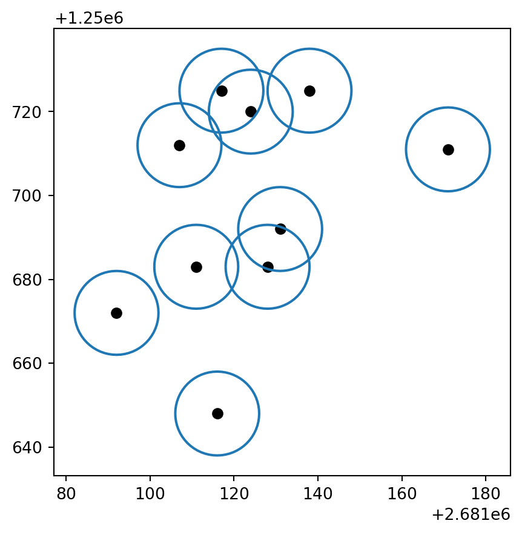
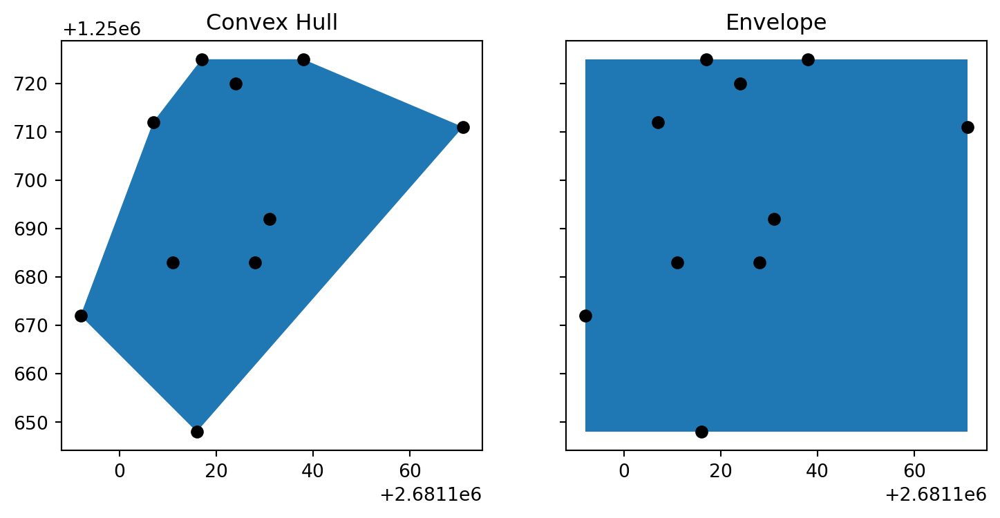
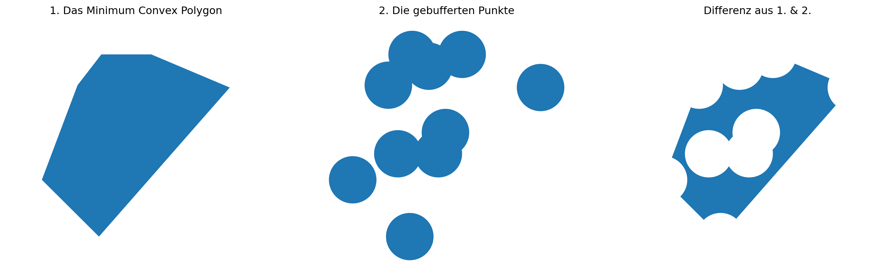

import geopandas as gpd
zeckenstiche = gpd.read_file("data/zeckenstiche.gpkg")Räumliche Operationen
Was bringt uns diese Geo Erweiterung? Mit GeoDataFrames sind nun alle räumliche Operationen möglich, die wir bereits aus ArcGIS kennen aber mit einfachen DataFrames noch nicht möglich waren. Ich möchte dies an ein paar Beispielen demonstrieren. Dazu müssen wir die Zeckenstiche in GeoDataFrame konvertiert und in ein Geopackage exportiert haben, wie in Input: GIS in Python beschrieben.
Hinweis
- Die verschiedenen räumlichen Operationen in Geopandas erwarten unterschiedlichen Input, deshalb müssen wir manchmal zwischen Geometrien, Geoseries und GeoDataFrames hin und her konvertieren (siehe Aufbau von GeoDataFrames).
- Welcher Datentyp eure Operation braucht, seht ihr in der Dokumentation. Welcher Datentyp ihr habt, seht ihr mit
type(). - Um ein Objekt von einem Format in das andere zu konvertieren (angenommen das Objekt heisst
x), braucht ihr folgenden Code:
# von GeoDataFrame zu Geoseries:
zecken_geoseries = gpd.GeoSeries(zeckenstiche["geometry"])
# von GeoSeries zurück zu GeoDataFrame:
zecken_geodataframe = gpd.GeoDataFrame(geometry = zecken_geoseries) Buffer
Eine typische GIS-Operation ist das “Buffern” von Objekten. Der ArcGIS Befehl “Buffer” erreichen wir in Geopandas mit .buffer(). Folgender Code macht einen Buffer mit einer Distanz von 10m.
buffered = zeckenstiche.buffer(10) Um Geopandas-Objekte zu plotten, kann man einfach .plot() verwenden. Zudem kann man mit boundary die Umrisse eines Polygons extrahieren:
base = buffered.boundary.plot() # plottet die boundries
zeckenstiche.plot(ax = base, color = "black") # plottet die Punkte
Union
Mit unary_union können wir aus unserer Point-Geometrie ein MultiPoint erstellen (siehe Aufbau von GeoDataFrames). Dieser Befehl lautet in ArcGIS Union.
zeckenstiche_union = zeckenstiche["geometry"].unary_union
type(zeckenstiche_union) # Es handelt sich nun um den Typ "MultiPoint"shapely.geometry.multipoint.MultiPointWenn wir uns zeckenstiche_union nun mit print anschauen sehen wir, dass sämtliche Koordinaten in einem Objekt zusammengepackt sind:
print(zeckenstiche_union)MULTIPOINT ((2681092 1250672), (2681107 1250712), (2681111 1250683), (2681116 1250648), (2681117 1250725), (2681124 1250720), (2681128 1250683), (2681131 1250692), (2681138 1250725), (2681171 1250711))Minimum Bounding Geometry
Über ein MultiPoint lassen sich jetzt wunderbar sogenannte (in ESRI Terminologie) Minimum Bounding Geometries rechnen. Mit den gleichnamigen Funktionen können wir nun eine convex_hull 1 sowie eine envelope 2 über alle Punkte rechnen.
my_convex_hull = zeckenstiche_union.convex_hull
my_envelope = zeckenstiche_union.envelopeNun konvertiere ich beide Polygon-Geometrien in GeoSeries, damit sie einfacher zu visualisieren sind:
my_convex_hull = gpd.GeoSeries(my_convex_hull)
my_envelope = gpd.GeoSeries(my_envelope)Um die beiden Objekte nebeneinander zu visualisieren, importiere ich zuerst pyplot aus matplotlib (mit dem alias plt) und erstelle subplots
from matplotlib import pyplot as plt
fig, (ax1, ax2) = plt.subplots(1, 2,sharex=True, sharey = True,figsize = (9, 9))
# Erstellt den linken Plot
my_convex_hull.plot(ax = ax1)
ax1.set_title("Convex Hull")
zeckenstiche.plot(ax = ax1, color = "black")
# Erstellt den rechten Plot
my_envelope.plot(ax = ax2)
ax2.set_title("Envelope")
zeckenstiche.plot(ax = ax2, color = "black")
Overlay
Viele der Funktionen aus dem ESRI Toolset “Overlay” sind in der Geopandas Funktion overlay verpackt. Um sie zu demonstrieren nutze ich die Geometrien, die wir in weiter oben erstellt haben (buffered und my_convex_hull). Zuerst muss ich sie aber noch von GeoSeries in GeoDataFrames konvertieren.
buffered_gdf = gpd.GeoDataFrame(geometry = buffered, crs = 2056)
my_convex_hull_gdf = gpd.GeoDataFrame(geometry = my_convex_hull, crs = 2056) Nun kann ich beispielsweise die Overlay-Funktion difference ausführen:
my_difference = gpd.overlay(my_convex_hull_gdf,buffered_gdf, how='difference')# Bereitet die drei Subplots vor ################
fig, (ax1, ax2, ax3) = plt.subplots(1, 3, sharex=True, sharey = True, figsize = (18,9))
#################################################
# Plot links ####################################
my_convex_hull_gdf.plot(ax = ax1) #
ax1.set_title("1. Das Minimum Convex Polygon") #
ax1.set_axis_off() #
# Plot mitte ####################################
buffered_gdf.plot(ax = ax2) #
ax2.set_title("2. Die gebufferten Punkte") #
ax2.set_axis_off() #
# Plot rechts ###################################
my_difference.plot(ax = ax3) #
ax3.set_title("Differenz aus 1. & 2.") #
ax3.set_axis_off() #
#################################################